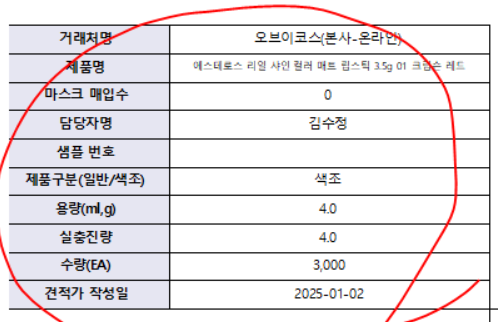
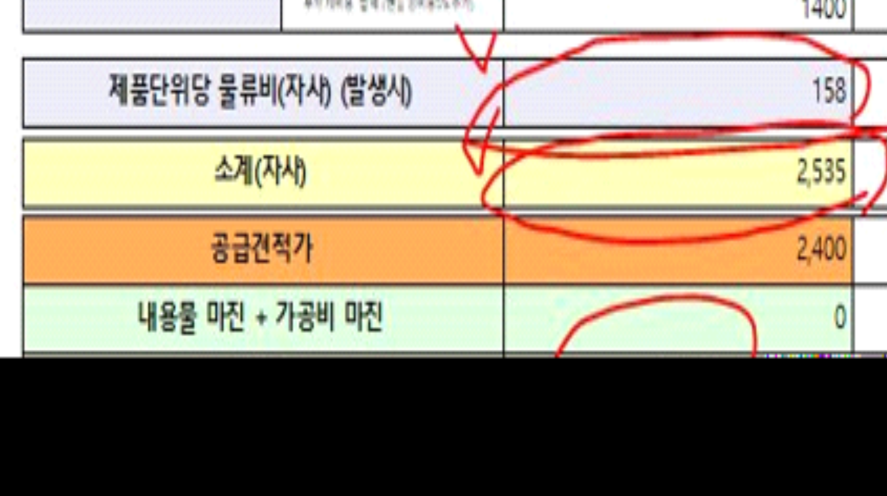

25.01.20 그린코스 견적단가산출
안녕하세요 시스웨어 하동호입니다.
견적단가산출_gcos 견적단가표(자사) 출력물에서
1. 왼쪽 위를 견적단가산출_gcos 견적단가표(OEM) 출력물과 동일하게 만들어주세요

2. 제품단위당 물류비(자사) (발생시) 는 견적단가산출_gcos의 제품단위당 물류비(OEM) 이 나오게 해주세요
3. 소계(자사) 는 원래 제품단위당 물류비(자사)를 계산 된 값이 나왔는데 제품단위당 물류비(OEM) 값으로 계산되도록 변경해주세요
4. 마진율은 오른쪽 정렬로 변경해주세요

확인부탁드립니다. 감사합니다.
출처: \<https://call.sysware.co.kr/Page/Open/76675/100101/0/18820244>
| 자사 | RptWMDPriceCalc_gcos |
|---|---|
| OEC | RptWMDPriceCalcOEM_gcos |